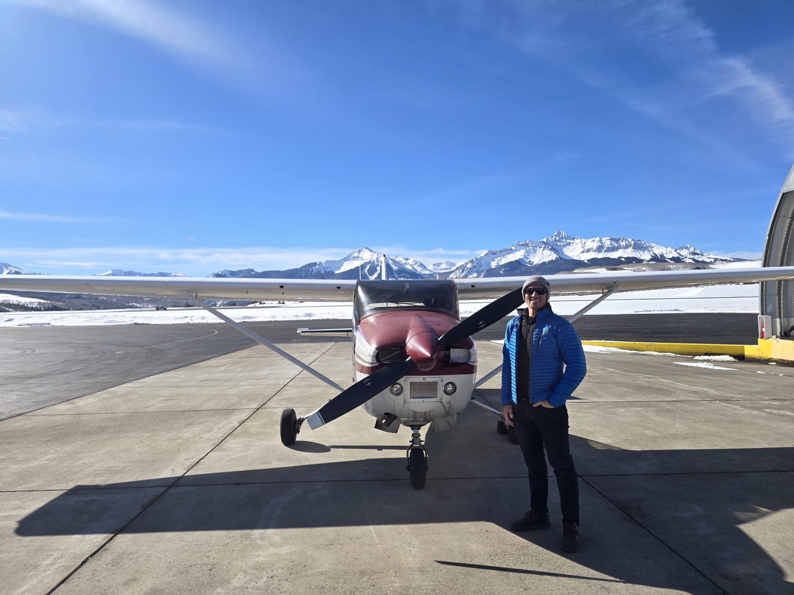
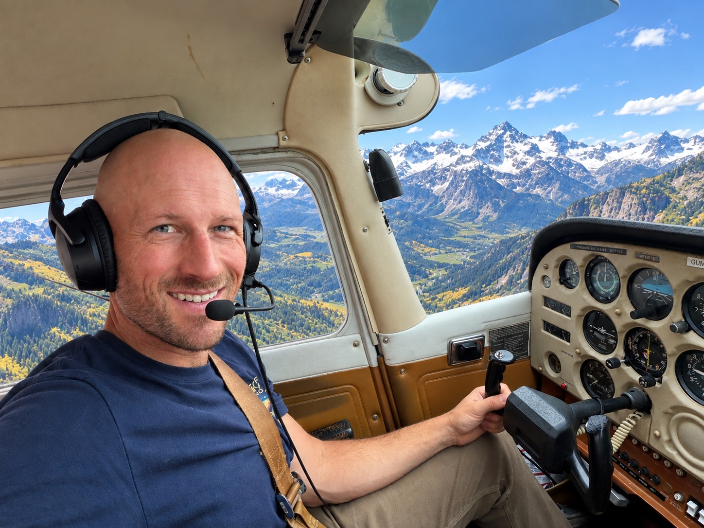

Clear, effective instruction
Complex aviation concepts broken down into simple, memorable ideas.

Flight instruction • Durango, Colorado
Personalized flight instruction for beginner and seasoned pilots who want to understand the sky, develop sound judgment, and build skills that last.

Meet your instructor
I’m Cole VandenBerg, a CFI and CFII based at Animas Airpark in Durango.
I have had a lifelong passion for flying. In 2013, I earned a bachelor’s degree in aerospace engineering from UCLA and in 2019, I started flying paragliders and was soon competing on a national level. I bring both a technical and intuitive perspective to flight training. My goal is to turn complicated concepts into clear, useful mental models and meet you where you are as a pilot. I received all of my flight training here in the Rocky Mountains where I fell in love with complex terrain and high altitude.
A different approach
Good instruction is more than checking boxes. We’ll build understanding, judgment, and confidence you can take into every flight, no matter the destination.
Complex aviation concepts broken down into simple, memorable ideas.
Training shaped by an intimate understanding of Rocky Mountain weather and years of experience with aeronautical decision-making
Whether you’re nervous about your first lesson or planning an aviation career, training is tailored to you.
Training
Start from the beginning with a discovery flight or work toward your private pilot certificate.
Build capability and confidence as you progress beyond the private pilot certificate.
Get the focused practice and instruction you need to keep flying safely and proficiently.
Learn to make better decisions in the unique environment of the San Juan Mountains.
Train in the San Juan Mountains
Mountain flying rewards preparation, judgment, and respect for changing conditions. My background as a competitive paraglider has given me a deep appreciation for mountain weather, forecasting, and the decisions that keep pilots out of trouble.
Talk about mountain flying →Getting started
Tell me what you want to learn and where you are in your flying journey.
We’ll talk goals, experience, availability, and what training makes sense.
We’ll build a practical training plan around your goals and pace.
Then we put the plan into practice and keep building from there.
Ready to fly?
Based at Animas Airpark and serving pilots in the Durango area and beyond.